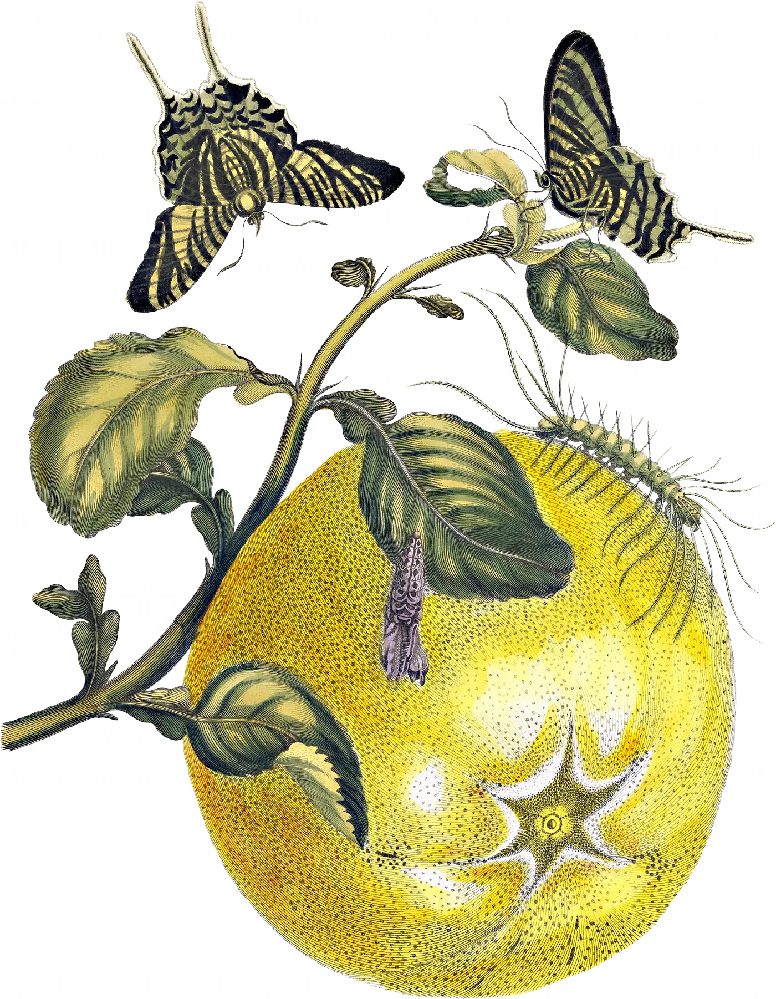

Usted es la Selva y la Selva es usted
Ser salvaje es ser parte de la selva. Y eso es usted. La naturaleza de la Selva es su abundancia, su forma particular y exuberante de permanecer.
Sus innumerables tonos de verdes son sutiles y sólo una mirada atenta y salvaje puede diferenciar y por lo tanto sostener. Usted es esa mirada que sostiene la Selva.
A partir del domingo vamos a celebrar su forma salvaje de habitar el mundo. Porque en la Selva no se está, se habita, es una forma particular de vivir. No hay adentro o afuera, arriba o abajo. Hay conexión, sentido, sentimiento, sensación.
Es imposible pensar que para mi serán unos Perfect Days.
"It's such a perfect day
I'm glad I spend it with you
oh such a perfect day
you just keep me hanging on,
you just keep me hanging on"
Encuentra la palabra que te lleva a la próxima parada.
La palabra que encontraste en la estación anterior abre esta parada.
Texto de muestra. Segunda estación: acá va lo que la persona acaba de desbloquear y por qué esta parada cambia lo que sabía en la anterior.
Placeholder de la pista. Un acertijo breve que apunte a la tercera estación sin nombrarla.
Texto nuevo de esta pantalla.
Texto nuevo de esta pantalla.
Texto nuevo de este bloque.
Faltan tres. Escaneá el próximo código con la misma tarjeta para seguir abriendo la historia.
Buscar la estación 03 →